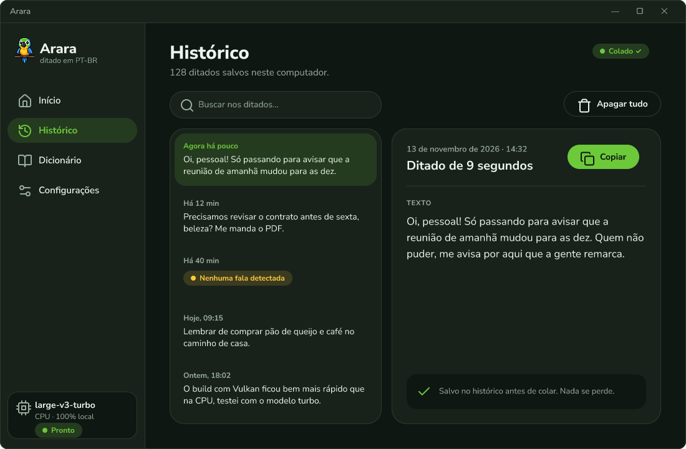
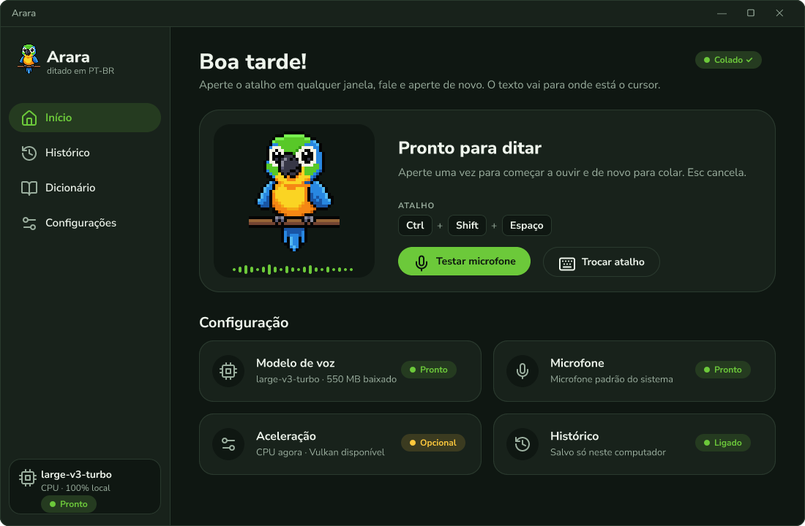
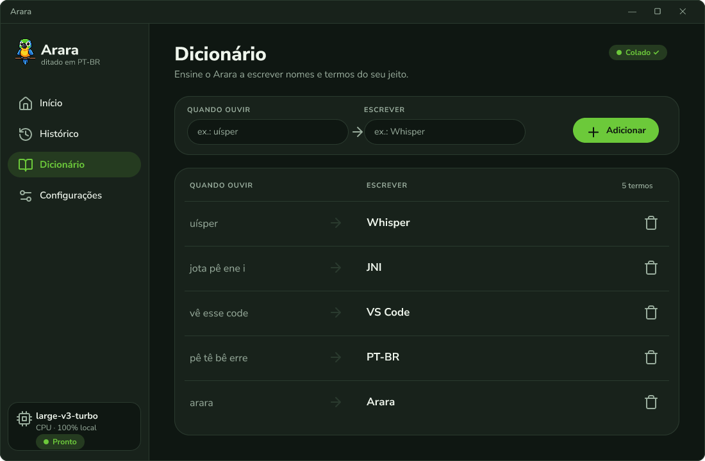
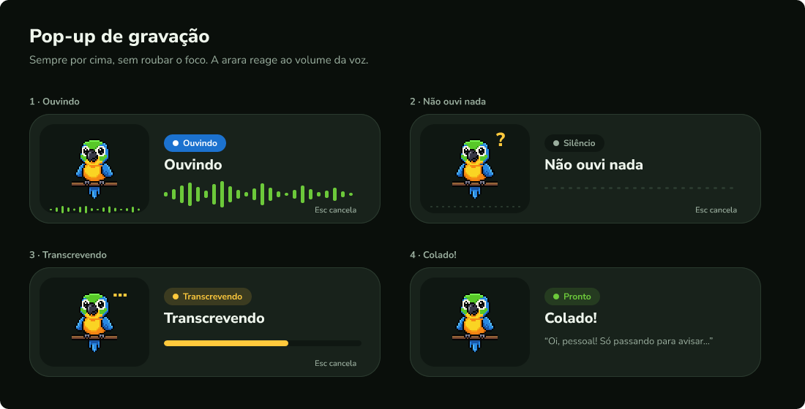

O que é
Digitar prompt cansa.
Falar é natural.
O Arara nasceu para conversar com agentes de código. Você explica o que quer em voz alta, do jeito que explicaria para um colega, e ele transforma em texto pronto para enviar.
- Qualquer janelaTerminal, IDE, navegador, chat.
- Português de verdadeSotaque, gíria e termo técnico.
- Sua voz não sai do PCO modelo roda na sua máquina.


Demonstração
Você fala.
Ele cola.
O Arara não digita letra por letra: transcreve e cola o texto inteiro, de uma vez, onde está o cursor.
- 1Ctrl + Shift + Espaçoem qualquer janela
- 2Ouvindo…as ondas seguem a sua voz
- 3Colado ✓texto inteiro, sem digitar
Compatível
Fala com todos os seus agentes.
Se tem caixa de texto, o Arara escreve nela.
 Claude Code
Claude Code Codex
Codex- Cursor
 Gemini CLI
Gemini CLI- GitHub Copilot
- Windsurf
- Grok
e qualquer outro app com campo de texto: navegador, Slack, Word, VS Code…
O app
Simples assim.
Do jeito que está.
Telas reais do Arara. Sem conta, sem configuração difícil: abre, aperta o atalho e fala.


Como funciona
Três passos. Zero digitação.
-
Aperte o atalho
Em qualquer janela, com o cursor onde o texto deve entrar.
CtrlShiftEspaço -
Fale
Do seu jeito. O pop-up mostra as ondas enquanto ouve.
-
Pronto, colado
O texto aparece inteiro onde está o cursor. É só enviar.
Colado ✓
Sua voz, direto no cursor.
Windows 10 e 11 · roda sem internet depois de baixar o modelo